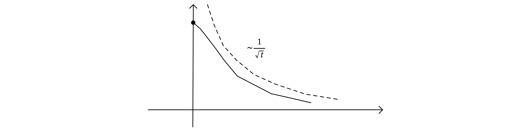
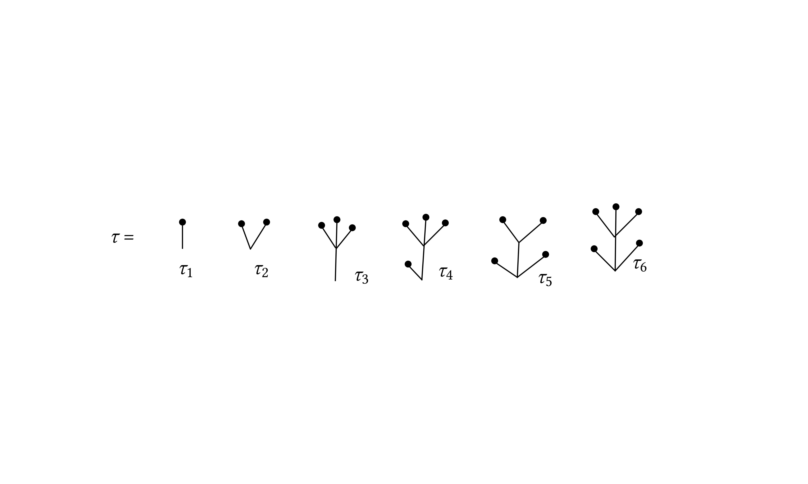

INI Seminar 20181005 Weber
Literature
Da Prato–Debussche AoP 2003 (local/global \(\mathbb{R}^2\)).
Hairer, Inventiones 2014 (local \(\mathbb{T}^3\))
Catellier–Chouk AoP 2018 (arXiv 2013) (local \(\mathbb{T}^3\))
Kupiainen Ann. IHP 201? (local \(\mathbb{T}^3\))
Mourrat–Weber AoP 2017, Mourrat–Weber AoP 2017 (global time \(\mathbb{T}^3\))
Gubinelli–Hofmanova 1804.11253 1810.01700
Albeverio–Kusuoka 1711.07108 (Nov 2017)
Moinat–Weber 1808.10401 and forthcoming.
Aim: Apriori bounds on the equation
Observation (1): scaling (formal)
with \(\hat{\phi} (t, x) = \lambda^{1 / 2} \phi (\lambda^2 t, \lambda x)\) , \(\lambda > 0\). Suggests to use \((\partial_t - \Delta)\) to understand the small scales and on small scales \(\hat{\phi}^3\) is the “enemy”. For large scales we have to use \(\phi^3\) as good term.
Observation (2): Solve \(\dot{X} = - X^3\) with \(X (0) > 0\) gives
therefore all solutions “come down from infinity”:

with a source term \(g\): \(\dot{X} = - X^3 + g\) we have
In the Mourrat–Weber 2017 paper we proved the SPDE version of this bounds. A pure PDE statement:
where on the l.h.s. there is a topology for solutions on \(\mathbb{T}^3\). This bound is independent of the initial conditions on the solution.
Theorem
on \(P_0 = (0, 1) \times \{ x : | x | < 1 \}\). No assumptions on boundary conditions on this open set. Let \(\varphi = X + v\) where \(X\) solves \(\)\((\partial_t - \Delta) X = \xi\) in \(P_0\) with Dirichlet boundary continutions at \(t = 0\) and \(| x | = 1\) and let \(P_R = (R^2, 1) \times \{ x : | x | \leqslant 1 - R \}\) (parabolic scaling), then
where \(\tau\) are the trees which appear in the solution theory of \(\varphi^4_3\) (they are six):

Where \(n (\tau_1) = 1\), \(n (\tau_2) = n (\tau_4) = n (\tau_5) = 1\), \(n (\tau_3) = n (\tau_6) = 3\).
Remark
The various objects are defined as follows
where \(C_1, C_2\) are renormalization constants.
Remark
for \(\varepsilon\) small enough.
By using this remark and the bounds above, together with the regularity of the various tress one can immediately deduce the following integrability for the random field \(v\):
Corollary
Remark
where \(\xi\) is the space–time white noise in \(d = 1\) and \(m > 1\) and we get
| \(\displaystyle \mathbb{E} [\exp (\| u \|_{P_{1 / 2}}^{2 + (m - 1) \alpha})] < \infty, \qquad \forall \alpha < 1 / 2. \) | (1) |
Which is the optimal result when we compare with the integrability of the invariant measure since it is given by
where \(\nu\) is the Brownian bridge on \([- 1, 1]\). For this measure we have
(the second comes from the regularity of the Brownian bridge) and interpolating one gets an integrability of the \(L^{\infty}\) norm which match the result (1).
Ideas of the proof: we observe that
and we use this decomposition to control the small scales. For large scales we let \(\Psi\) be a smooth compactly supported kernel (chosen in the right way). We will denote \(v_T = v \ast \Psi_T\) where \(\Psi_T = T^{- s} \Psi (t / T^2, x / T)\) and \(v_T\) satisfies
Assume that for \(T\) fixed the term \((v_T^3 - (v^3)_T)\) is small (due to regularity of \(v\)).
Theorem
then
Proof. (sketch). We assume that \(g = 0\) makes things slightly easier. We let \(\eta\) be a smooth version of the distance of \(x\) to the boundary of \(P_0\), \(\eta (t, x) \approx d_{\operatorname{parabolic}} ((t, x), \partial P_0)\). We want a bound on \(\eta u\). We can assume it has a maximum in the interior \((t_{\ast}, x_{\ast})\) and hence at that point \(\nabla (\eta u)_{\ast} = 0\) and \((\partial_t - \Delta) (\eta u)_{\ast} \geqslant 0\). An explicit computation gives
and this can be modified to give the full proof. \(\Box\)
Remark
We need now a control of the small scales of \(v\). The kind of bounds we are aiming for is of the form of the standard Schauder type estimates for
look like (\(\llbracket \cdot \rrbracket_{C^{\alpha} (D)}\) Holder seminorm)
At this point we use the approach of regularity structures: we have the following regularities
and this equation cannot be closed at this stage. Let us try to expand further and we are in the situation:
This is a bit better but we are not done yet. The term \(v^2 \tau_1\) is now under control:
but we cannot have useful bounds for \(v \tau_2\). We are going to fix a space–time point \(z_0\) and freeze the coefficients of the equation at \(z_0\) as follows:
Recall that \((\partial_t - \Delta) \tilde{\tau}_2 = \tau_2\). We are now going to compare \(U (y, z_0)\) with \(U (z_0, z_0)\) to get some nice on diagonal regularity:
This kind of Schauder estimates is at the core of Hairer's integration theorem. We use a formulation which is adapted from the work Weber/Otto. There are localization details to be taken into account. Back to
and now we can have a good control of each of these terms by using the regularity of the terms in the square brackerts to counteract the irregularity of the distributions we have to multiply them with.
Bounds on this kind of expression are given by Hairer's reconstruction theorem. We use a version which is very much inspired by the work Otto/Weber.
As a result we get things like
The last non-trivial thing one has to do is to choose \(T \approx \| v \|_{\text{\{original ball\}}}^{- 2}\) and one get an estimate which can be iterated and which gives the final bounds.